Contributors
NCLIM brings together an interdisciplinary network of research scientists, oceanographers, ecosystem modelers, economists, and fisheries biologists across leading academic and government institutions.
University of Maine
Lisa Kerr
Professor
Lisa.kerr1@maine.edu
Jerelle Jesse
PhD Graduate Student
Jerelle.Jesse@maine.edu
Jamie Behan
Research Associate
Jamie.behan@maine.edu
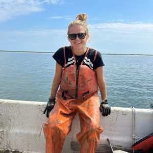
Alexandra Schneider
Postdoctoral Research Associate
Alexandra.schneider@maine.edu
Roger Brothers
Assistant Research Professor of Fisheries Science
John.brothers@maine.edu
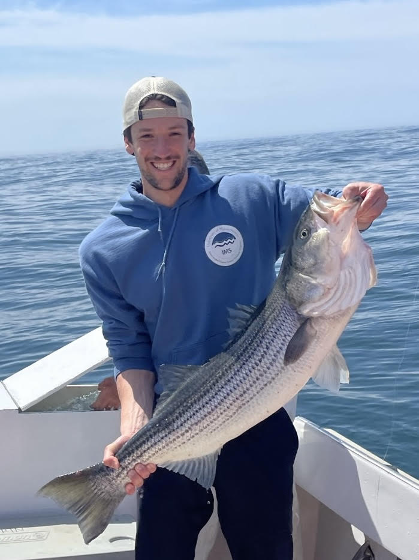
Cole Carrano
Postdoctoral Research Associate
Cole.Carrano@maine.edu
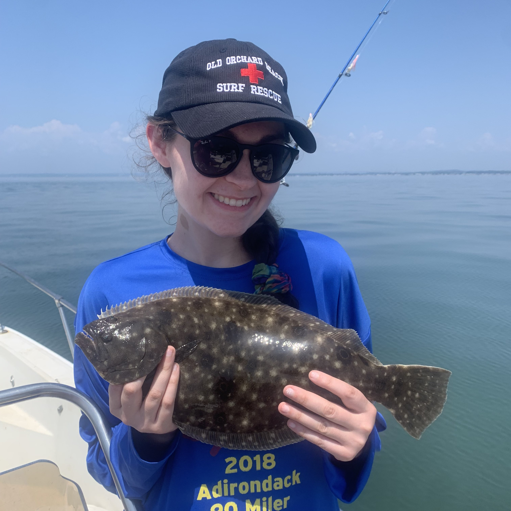
Hannah Jacobs
Master’s Graduate Student
Hannah.Jacobs@maine.edu
NOAA Fisheries
Vince Saba
Research Fishery Biologist
Vincent.Saba@noaa.gov
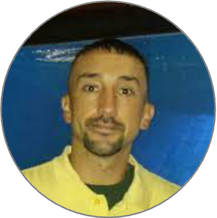
Jon Deroba
Research Fishery Biologist
Jonathan.deroba@noaa.gov
Tim Miller
Research Fishery Biologist
Timothy.j.miller@noaa.gov
Amanda Hart
Fish Biologist
Amanda.hart@noaa.gov
Joe Caracappa
Research Fish Biologist
joseph.caracappa@noaa.gov
Alex Hansell
Fish Biologist
alex.hansell@noaa.gov
Scott Large
Supervisory Research Fishery Biologist
scott.large@noaa.gov
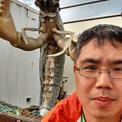
Min-Yang Lee
Economist
min-yang.lee@noaa.gov
Matt Cutler
Social Scientist
matthew.cutler@noaa.gov
Emily Liljestrand
Fish Biologist
emily.liljestrand@noaa.gov
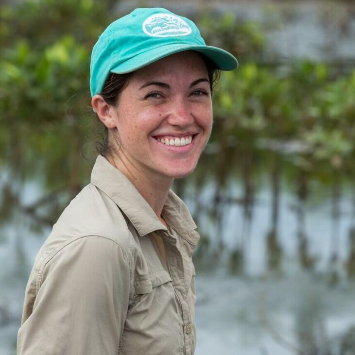
Kiera Morrill
Fisheries Social Scientist (Affiliate)
kiera.morril@noaa.gov
Gulf of Maine Research Institute (GMRI)
Kathy Mills
Supervisory Research Fishery Biologist
scott.large@noaa.gov
Andrew Allyn
Senior Research Manager
aallyn@gmri.org
Miguel Barajas
Quantitative Research Associate
mbarajas@gmri.org
Sarah Risley
Postdoctoral Research Associate
srisley@gmri.org
Rutgers University
John Wiedemann
Supervisory Research Fishery Biologist
john.wiedenmann@rutgers.edu
Jeewantha Bandara
PhD candidate
jeewantha.bandara@rutgers.edu
UMass Dartmouth (SMAST)
Steve Cadrin
Professor
scadrin@umassd.edu
Gavin Fay
Associate Professor
gfay@umassd.edu
Leander Hohne
Research Associate
lhohne@umassd.edu
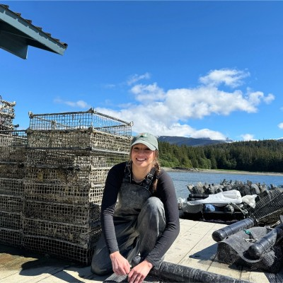
Liz Roros
M.S Graduate Student
eroros@umassd.edu
University of Delaware
Anna Birkenbach
Associate Professor
abirken@udel.edu

Whitney Morgan
PhD Graduate Student
wrmorgan@udel.edu
Woods Hole Oceanographic Institution (WHOI)
Greg Britten
Assistant Scientist I
gregory.britten@whoi.edu
Stonybrook University
Chengxue Li
Research Scientist
chengxue.li@stonybrook.edu
Past Contributors
Kelsey Roberts
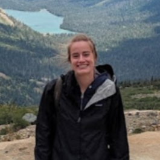
Sophie Wulfing
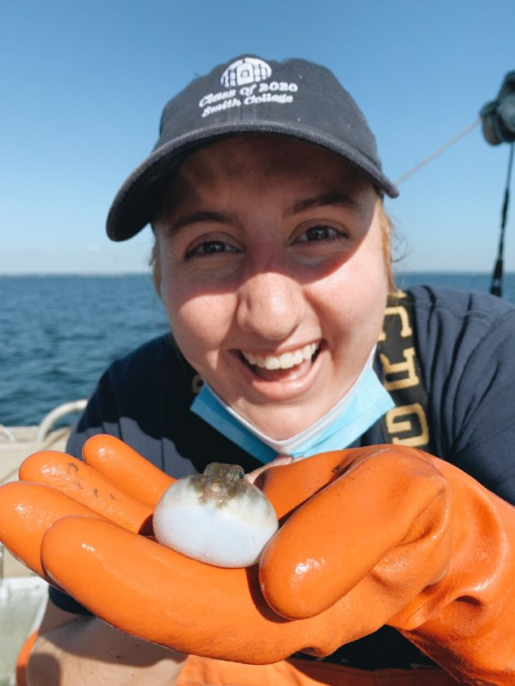
Julia Luddy
Hubert du Pontavice
Gregory Bopp
Katherine Maltby
Malin Pinsky
Jessica Kittel
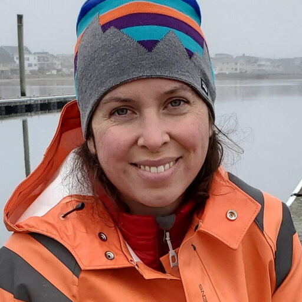
Katrina Zarella Smith
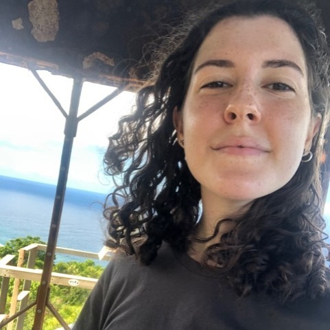
Madeleine Guyant
Enrique Curchitser
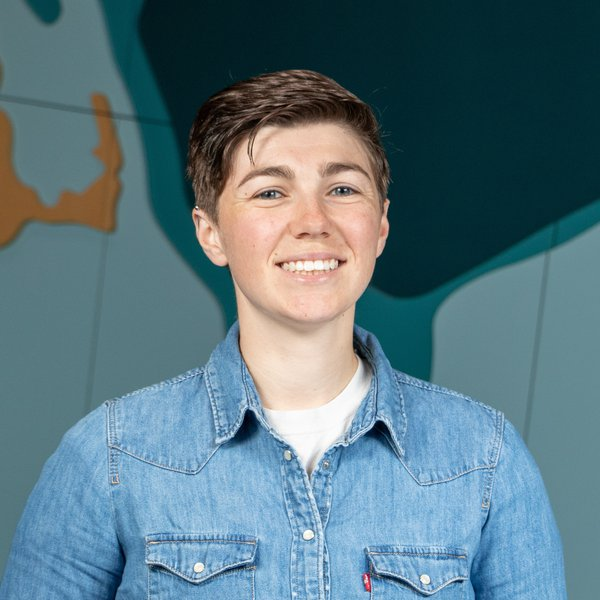
Katie Lankowicz
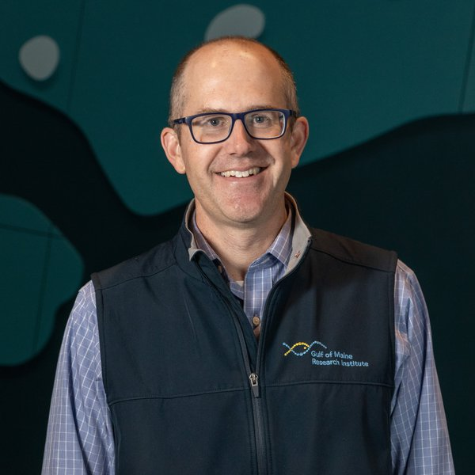